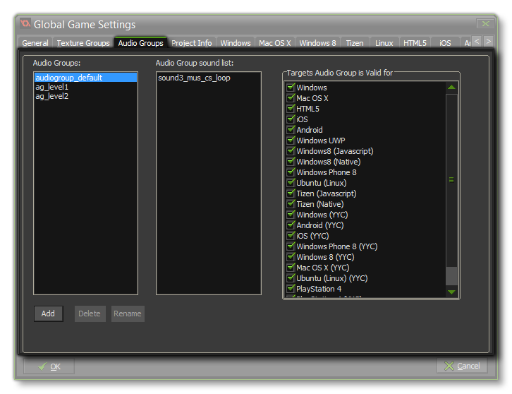

 Here you can add, delete and rename audio groups. GameMaker: Studio permits you to assign each of the audio resources (sound effects and music) to different audio groups to try and optimise the number of sounds that are being played at any one time, as well as give you further control over volume and other things. For that to work, you need to define the necessary audio groups from this tab, and then go through each of the appropriate resource types and select the group you wish it to belong to from the drop down menu. Once you have defined audio groups and assigned sounds to them you can see them in the list marked Audio Group Sounds List.
NOTE: If you have a set of sounds in a folder within the Resource Tree, you can Right Click on the folder icon and select "Assign audio group" to assign all the sounds contained with the folder to a specific audio group.
The "default" audio group will include the audio files in the game bundle and they will all be loaded into memory on start-up (unless flagged as "streamed" in the Audio properties), but when you create a custom audio group, the files that are added to it will not be loaded into memory until you call the function audio_group_load(). In this way you can control what audio is resident in memory at any time.
Audio Groups are also linked to the Configurations settings. When you select a configuration, you can then open the Audio Groups tab and select the export
targets from the right hand side for that configuration. Note that you cannot set audio resources to different groups on a configuration basis, only the export target for the given group.
For more information on how to set a sound to a specific audio group, please see the section Sounds and Music and for
the functions available see the section on Audio Functions.
NOTE: Audio groups can only be used when working with the normal audio system, but will not work with legacy audio.
NOTE: This functionality is limited to the Professional Version of GameMaker: Studio.